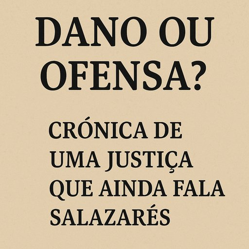

Publicado em 2025-06-25 09:14:35
O Portugal do "respeitinho", no ano da graça de 2025. Cinquenta primaveras passaram desde que abril abriu portas à liberdade. Mas em certos corredores dos tribunais, ainda ecoam os sussurros bafientos de um tempo em que o silêncio era virtude, a crítica era pecado e o juiz vestia toga… e batina.
Hoje, o cidadão comum escreve uma opinião no blogue, um comentário no Facebook ou solta uma farpa bem dada numa crónica. Faz-se ouvir. E eis que surge a reação: “ofendeu o meu bom nome!”
E o juiz, impávido, consulta o Código Civil. Aquele mesmo que nasceu em pleno salazarismo, quando a honra era bem mais valiosa que a verdade — e onde chamar “incompetente” a um político podia ser tratado como heresia institucional.
No Portugal de hoje, confunde-se ofensa com dano como quem confunde febre com peste.
Diz-se: “Ofendeu-me!”
Mas pergunta-se: “E que dano sofreu?”
E responde-se: “Ora… nenhum. Mas senti-me muito.”
A Justiça portuguesa, quando bem formada, distingue:
– Dano: é real, objetivo, pode ser medido, provado, analisado.
– Ofensa: é sensação, percepção, um relâmpago emocional — que pode ou não ser legítimo, mas não é, por si só, matéria de condenação.
Mas em muitos tribunais, a balança continua torta. O código é lido com os olhos do século XXI… mas interpretado com a mentalidade do século XX — ou XIX, vá.
Muitos juízes portugueses — há que dizê-lo — ainda julgam com base num moralismo institucionalizado.
Vêem-se como tutores do civismo, pastores da compostura pública.
E nisso, confundem a função de fazer justiça com a missão de castigar irreverências.
Assim, uma crítica fundamentada a um governante ou a um empresário torna-se motivo de processo.
Um texto jornalístico incómodo transforma-se em “difamação”.
E, espantosamente, quem diz a verdade pode ser condenado… por não o ter dito de forma delicada.
Não há democracia sem liberdade de pensamento.
Não há pensamento livre se o medo de ser processado coarta a palavra.
E não há justiça verdadeira se a ofensa sentida tiver mais valor que o dano provado.
Os cidadãos devem ser alertados:
– A justiça não é lugar de egos feridos.
– A crítica, mesmo mordaz, é salutar numa sociedade adulta.
– O Código Civil precisa de ser reformado — não para proteger os frágeis, mas para fortalecer a verdade.
Abril trouxe-nos o direito de dizer.
Mas a Justiça ainda quer escolher o como, quando e a quem se diz.
E enquanto for assim, o dano maior não será no “bom nome” do queixoso.
Será na liberdade de todos.
Artigo da autoria de Francisco Gonçalves in Fragmentos de Caos
O cerne do absurdo lusitano: podes ser roubado à vista desarmada, ver o país endividado por negócios ruinosos, ouvir escutas comprometedoras, ler relatórios e acórdãos… mas se disseres “corrupto” ou “ladrão” em voz alta, arriscas-te a ir ao banco dos réus — tu, e não ele.
Em Portugal, temos o estranho costume de proteger a honra dos suspeitos…
Mesmo quando a honra deles já está afogada num mar de indícios."Ai de quem chamar ladrão a quem anda a desviar milhões: não é o roubo que indigna os tribunais, é a ousadia de chamar-lhe pelo nome. Em vez de louros pela vigilância cívica, o cidadão leva processos por calúnia. E assim seguimos, país de brandos costumes… para os ladrões."